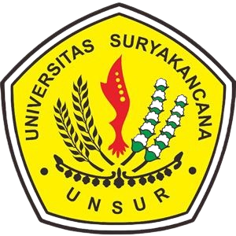
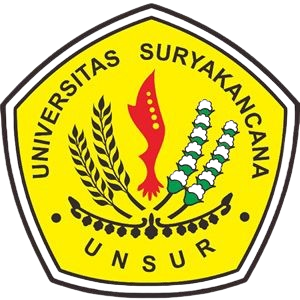

Program Kerja KKN Desa Cirama Girang
Berikut adalah rincian program kerja KKN kami, dibagi berdasarkan bidang keilmuan untuk optimalisasi kontribusi dan dampak bagi masyarakat Desa Cirama Girang.
⚖️ Program Kerja Unggulan
-
📜
Bazar Usaha Mikro Kecil Menengah(UMKM)Bertujuan untuk meningkatkan penjualan dan eksposur produk UMKM, Serta mengedukasi dan menginspirasi masyarakat
-
🤝
Memeriahkan Hari KemerdekaanBertujuan untuk Memupuk Semangat Nasionalisme dan Patriotisme, mengakrabkan diri dengan masyarakat, dan Mengembangkan Kreativitas dan Gotong Royong masyarakat
⚖️ Program Kerja Bidang Hukum
-
📜
Penyuluhan Hukum Dasar & Literasi Hukum: Memberikan edukasi tentang narkoba, pentingnya menjauhi narkoba.
-
🤝
Pendampingan Mediasi Konflik Komunitas: Memfasilitasi penyelesaian sengketa atau konflik kecil ditingkat masyarakat secara kekeluargaan dan musyawarah.
🏗️ Program Kerja Bidang Teknik
-
⚡
Edukasi Pemanfaatan Energi Terbarukan Sederhana: Sosialisasi dan demonstrasi singkat mengenai potensi pemanfaatan energi surya skala kecil untuk kebutuhan rumah tangga.
-
🗺️
Pemetaan Potensi Wilayah Dasar: Membuat peta sederhana potensi Desa (misal: lokasi sumber air, area pertanian, fasilitas umum) untuk mendukung perencanaan Desa.
💰 Program Kerja Bidang Ekonomi Syariah
-
📈
Pelatihan Keuangan Syariah untuk UMKM: Edukasi mengenai prinsip-prinsip keuangan syariah, manajemen keuangan sederhana, dan model bisnis syariah untuk pelaku UMKM Desa.
-
🛒
Pendampingan Pemasaran Digital Berbasis Syariah: Membantu UMKM desa dalam memasarkan produk mereka secara online dengan tetap memperhatikan nilai-nilai syariah.
📚 Program Kerja Bidang Keguruan
-
✏️
Bimbingan Belajar dan Literasi Anak: Mengadakan les tambahan untuk anak-anak sekolah dasar dan menengah, serta program peningkatan minat baca melalui pojok baca Desa.
-
🎨
Workshop Kreativitas & Keterampilan: Mengajarkan keterampilan praktis (misal: kerajinan tangan, daur ulang kreatif) untuk anak-anak dan remaja Desa.
-
👨‍🏫
Pelatihan Penggunaan Alat Peraga Sederhana: Memberikan pelatihan kepada guru-guru PAUD/TK/SD di Desa tentang pembuatan dan penggunaan alat peraga edukatif dari bahan lokal.
🌱 Program Kerja Bidang Pertanian
-
🌾
Sosialisasi Pertanian Organik & Pupuk Kompos: Memberikan edukasi tentang metode pertanian organik, manfaatnya, serta cara membuat pupuk kompos dari limbah organik Desa.
-
🐛
Pengendalian Hama & Penyakit Tanaman Ramah Lingkungan: Mengenalkan metode pengendalian hama dan penyakit secara alami atau minimalisir penggunaan bahan kimia.
-
💧
Manajemen Irigasi Sederhana: Edukasi dan diskusi tentang praktik manajemen air untuk irigasi yang efisien dan berkelanjutan.
Setiap program dirancang untuk memberikan dampak positif dan berkelanjutan bagi kemajuan Desa Cirama Girang, selaras dengan kebutuhan dan potensi masyarakat.